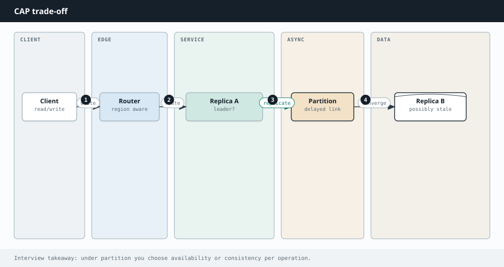

System Design
Chapter 25
CAP and consistency

Once data lives on more than one machine, physics forces a trade off. The CAP theorem names it. In the moment two parts of your system cannot talk to each other, you have to choose between giving every request a correct answer and giving every request an answer at all.
Consistency C CP AP A P CA (only without partitions) Availability Partition tolerance During a network partition you must give up either strong consistency or availability.
What the three letters mean
Consistency here means every read sees the most recent write, so all machines agree. Availability means every request gets a response, even if some machines are down. Partition tolerance means the system keeps working when the network between machines drops messages, which in the real world it eventually will.
The theorem says you can only fully guarantee two of the three at once. Since network partitions are a fact of life in any distributed system, partition tolerance is not really optional. So the real choice is CP versus AP: when a partition happens, do you refuse to answer rather than risk a wrong answer (CP), or do you keep answering and accept that some replicas are temporarily out of date (AP)?
How this shows up
A banking ledger leans CP: it would rather reject a request than show two people the same money.
A social feed or a shopping cart often leans AP: showing a slightly stale like count or reconciling a cart later is fine, and staying available matters more.
C O N S I S T E N C Y I S A S P E C T R U M
Beyond the strict either or, there are useful middle grounds. Strong consistency means reads always reflect the latest write. Eventual consistency means replicas converge given a little time. Read your writes guarantees you at least see your own recent changes. Real systems pick different levels for different features, tight for payments, loose for view counts.
P A C E L C , T H E H O N E S T F O O T N O T E
CAP only talks about behavior during a partition. PACELC adds the rest: even when everything is healthy (the Else case), you still trade a little latency for a little consistency.
Waiting for more replicas to confirm a write is safer but slower. That quiet trade off is always present, not just during failures.
Going Deeper
Tuning consistency with quorums
You do not have to choose strong or eventual for the whole system. Quorums let you dial it per operation. With N replicas, if every write must reach W of them and every read must reach R of them, then as long as W plus R is greater than N the read set and the write set always share at least one replica, so a read is guaranteed to see the latest write. Turn W and R up for stronger consistency at the cost of slower, less available operations, or down for speed and weaker guarantees. This is exactly how systems like Dynamo make the trade off a knob rather than a fixed choice.
Strong consistency means every read reflects the latest write. Eventual consistency means replicas converge given a little time. Read your writes guarantees you at least see your own recent changes. Causal consistency preserves cause and effect ordering. Real systems mix these, tight for payments, loose for view counts, rather than picking one globally.